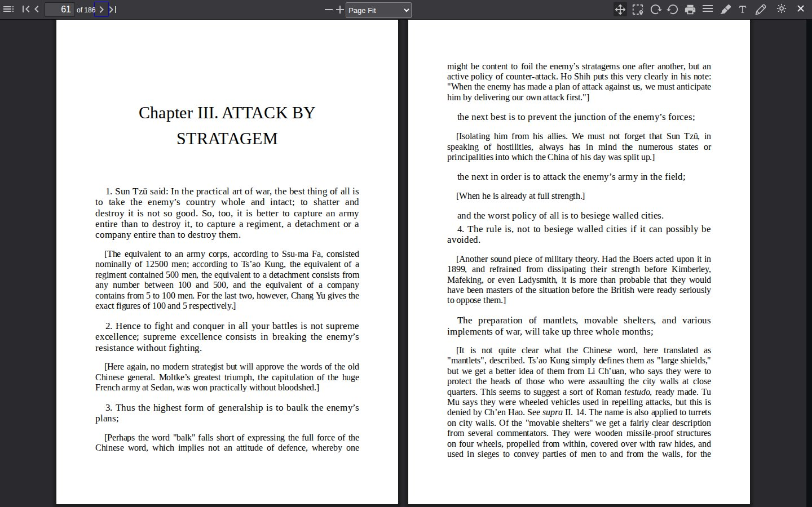
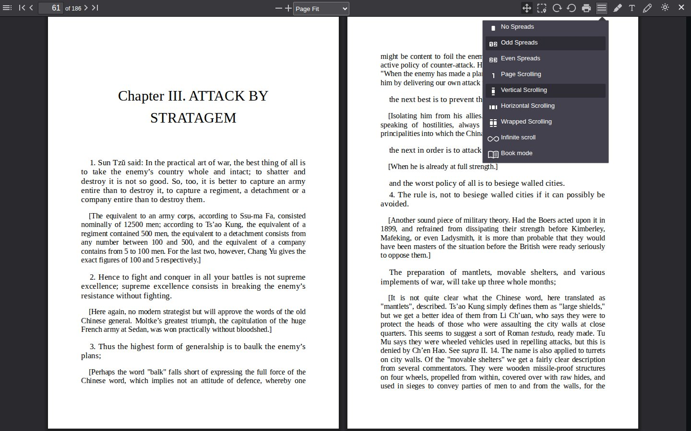

PDF reader
Trove includes a full PDF reader powered by PDF.js with support for annotations, multiple view modes, search, and reading progress tracking.
Reading Interface

The reader opens with a toolbar across the top and an optional sidebar showing the document outline (table of contents). The sidebar can be toggled with the sidebar button in the toolbar.
Toolbar Actions
Left side:
| Button | Action |
|---|---|
| Sidebar toggle | Show/hide the document outline |
| Find | Open the search bar |
| Page input | Jump to a specific page number |
Right side:
| Button | Action |
|---|---|
| Zoom controls | Zoom in/out and preset zoom levels |
| Hand tool | Pan/scroll mode |
| Select tool | Text selection mode |
| Rotate | Rotate page clockwise or counter-clockwise |
| Print the document (requires download permission) | |
| View mode | Page spread and scroll mode selector |
| Highlight | Highlight annotation tool |
| Text | Text annotation tool |
| Draw | Freehand drawing tool |
| Theme toggle | Switch between dark and light mode |
| Close | Exit the reader |
View Modes

The view mode dropdown offers several ways to display pages:
Page Spreads
| Mode | Description |
|---|---|
| No Spreads | Single page at a time |
| Odd Spreads | Odd pages on the left, even on the right |
| Even Spreads | Even pages on the left, odd on the right |
Scroll Modes
| Mode | Description |
|---|---|
| Page Scrolling | One page at a time, snapping between pages |
| Vertical Scrolling | Continuous vertical scroll through all pages |
| Horizontal Scrolling | Scroll left/right through pages |
| Wrapped Scrolling | Pages wrap like a grid, multiple pages visible at once |
| Infinite Scroll | Seamless continuous scrolling |
| Book Mode | Two-page spread that mimics a physical book |
Zoom Options
Four preset zoom levels are available in the reader preferences:
| Option | Description |
|---|---|
| Auto | Automatically selects the best zoom |
| Page Fit | Fits the entire page in view (default) |
| Page Width | Fits the page width to the window |
| Actual Size | Displays at 100% scale |
The toolbar also provides manual zoom in/out controls.
Annotations
The PDF reader supports three annotation types:
- Highlights for marking text passages
- Text annotations for adding comments
- Freehand drawing for markup
Annotations are saved automatically (with a 1.5 second debounce) and persist across sessions.
Search
Click the Find button or use Ctrl+F to open the search bar. Matches are highlighted in the document as you type.
Reading Progress
Progress is saved automatically on every page change. The reader tracks both the current page number and the reading percentage. When you reopen a PDF, it returns to your last position.
Reading sessions are recorded in the background with start/end times and page positions.
Settings Persistence
PDF reader settings can be saved globally (applied to all PDFs) or per book. The scope is controlled in Reader Preferences. Per-book settings override global defaults when enabled.